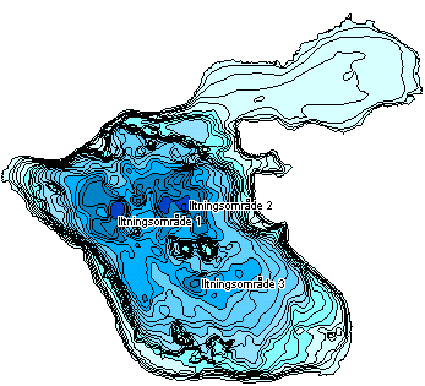

Toggle navigation
Lake Fure
Home
Calibration
Modelling
MkDocs
Search
Previous
Next
Lake Fure documentation
1. Introduction to Lake Fure(Furesø)
2. Lake Fure Physical environment
Lake Fure documentation
1. Introduction to Lake Fure(Furesø)
2. Lake Fure Physical environment
Lake overview
2D Lake detpsh Overview 
Location,
Google Maps
Lake Fure introduction from
WIKI,in Danish
×
Close
Search
From here you can search these documents. Enter your search terms below.